Lumen
Yours, truly.

Lumen brings intelligent control to everything you do. Modular by design, it adapts instantly — understanding your words, connecting your tools, and acting the moment you ask.
Intelligence meets Utility.
Built on the Gemini API, Lumen brings intelligence to every interaction. Each module connects seamlessly, letting tools, data, and context flow together effortlessly. It understands, adapts, and extends — giving you an assistant that feels less like software, and more like a natural extension of your workflow.
Practical by Design
Modular components that slot into your workflows, giving utility without friction.
The integrations for Lumen were inspired by MCP (Model Context Protocol), announced by Anthropic in 2024. It provides a standardized protocol for connecting LLM's with tools. SMCP for Lumen follows this concept closely, to provide maximum efficiency and practicality.
Endless Possibilities.
Literally.
Integrations
Thanks to its SMCP-based architecture, each function runs as an independent module — tools can be discovered, connected, or replaced in seconds. From APIs to custom logic, the system grows dynamically, adapting to your needs instead of restricting them.
Built In. Not Bolted On.
Lumen's capabilities are designed into the system core — not awkwardly attached. Features, modules, and integrations are first-class citizens: discoverable, composable, and consistent so the product grows with you without fragile workarounds.
Connected with iOS
Lumen integrates deeply with iOS, blending right into your everyday flow. Use the Share Sheet to send anything directly to your assistant, or pull in content straight from the clipboard.
Native and Secure
All inside Shortcuts
Keeping everything inside Shortcuts isn't just a design choice — it's what makes Lumen easy, fast, and endlessly flexible. You can trigger it from anywhere on iOS, connect it with your favorite apps, and build custom tools that work exactly how you want.

Lumen